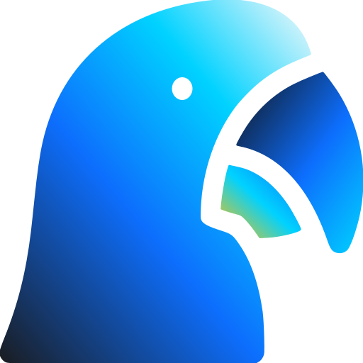

Arara CodeChatGPT
DesconectadoSeu ChatGPT na IDE
Use a cota do chat da sua conta. Mantenha o navegador aberto e o ChatGPT conectado.
Na IDE, abra ChatGPT → Conexão com navegador e copie o código.

Use a cota do chat da sua conta. Mantenha o navegador aberto e o ChatGPT conectado.
Na IDE, abra ChatGPT → Conexão com navegador e copie o código.